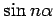

Inhalt Index DeskTop Bronstein

 Funktionen und ihre Darstellung Trigonometrische Funktionen (Winkelfunktionen) Wichtige Formeln für trigonometrische Funktionen
Funktionen und ihre Darstellung Trigonometrische Funktionen (Winkelfunktionen) Wichtige Formeln für trigonometrische Funktionen


| (2.121) |
| (2.122) |
| (2.123) |
| (2.124) |
| (2.125) |
| (2.126) |
Für große Werte von n ermittelt man und , indem die Formeln für und  nacheinander angewendet werden.